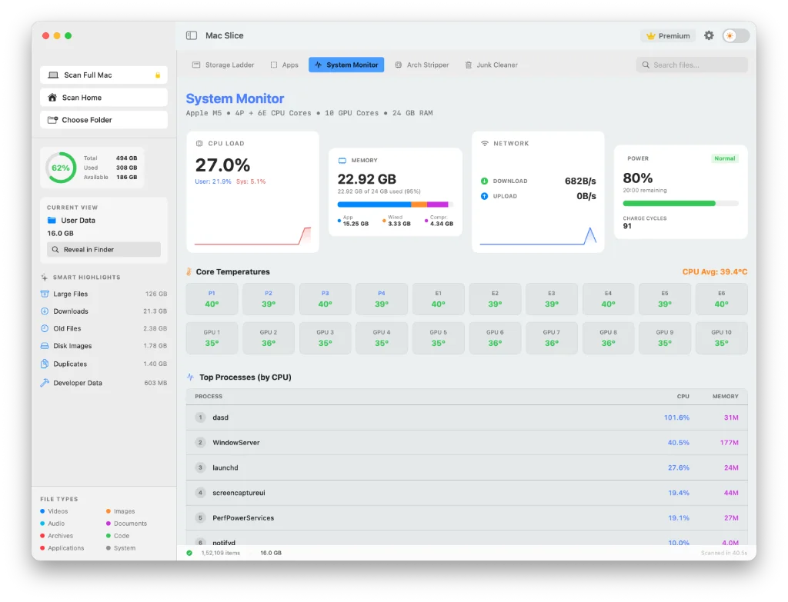

How do I free up space on my Mac fast?
The fastest way to free up space on a Mac is to find the few folders taking most of it, then deal with those, rather than deleting lots of small files. A full Mac is rarely full of everything. It's usually full of two or three things: local Time Machine snapshots, old iPhone backups, app caches, leftovers from deleted apps, developer files or a Downloads folder nobody has opened in years.
The 12 fixes below start with the ones that tend to return the most space for the least risk. To free up space on a Mac fast, empty every Trash (including Photos' Recently Deleted album), sort Downloads by size and delete the largest files, remove old local Time Machine snapshots, and delete iPhone or iPad backups you no longer need. Those four steps take about ten minutes and don't touch anything you'd miss.
If that isn't enough, work through the full list below.
The 12 fixes
1. Find the biggest folders first
Most wasted cleanup time comes from deleting things that were never the problem. Before you start, find out where the space is.
Mac Slice scans your drive and draws every folder as a block sized by how much space it takes, including the Library folders Finder hides. The two or three folders causing the problem are the biggest blocks on the screen. The map is free.
Prefer Terminal? This ranks the folders in your home folder by size:
du -sh ~/* ~/Library/* 2>/dev/null | sort -hFind the folders filling your Mac
Mac Slice draws your whole drive to scale, hidden Library folders included, so the few things taking most of the space are the biggest blocks on screen. The map is free. Pro ($11.99 once) deletes, uninstalls and clears app leftovers natively.
Get Mac Slice Pro · $11.99✓ One-time payment · 15-day guarantee

2. Empty every Trash
The Finder Trash is the obvious one. Photos keeps deleted pictures in Recently Deleted for 30 days, Notes has its own Recently Deleted folder, and Mail keeps a Trash mailbox. All of them count against your storage until they're emptied.
3. Clear out Downloads and old installers
Open Downloads in Finder, switch to List view and sort by Size. Installers, disk images and videos collect here for years.
While you're at it, search your whole Mac for .dmg and .pkg files. Once an app is installed, its installer is dead weight.
4. Remove local Time Machine snapshots
macOS keeps hourly snapshots on your internal drive between Time Machine backups. If your backup disk has been unplugged for a while, they pile up, and they're often the largest single item on a full Mac. List them:
tmutil listlocalsnapshots /Ask macOS to thin them (this requests roughly 20 GB back):
sudo tmutil thinlocalsnapshots / 21474836480 4Plugging in your backup drive and letting a backup finish also clears the backlog.
5. Delete old iPhone and iPad backups
Connect your device, select it in the Finder sidebar and click Manage Backups, or open ~/Library/Application Support/MobileSync/Backup, where each folder is one full backup. Delete backups for devices you no longer own. Check you have another copy first, because deleted backups can't be recovered.
6. Clear app caches
Press Cmd + Shift + G in Finder and go to ~/Library/Caches. Delete the contents of individual app folders, not the Caches folder itself. Browsers, music apps, chat apps and design tools are the usual heavyweights. Everything here rebuilds, though you may need to sign in again.
7. Uninstall apps you don't use, properly
Dragging an app to the Trash removes the app but leaves its containers, caches and preference files behind. Apps you haven't opened in a year are worth removing, and it's worth removing them completely.
Mac Slice Pro's uninstaller removes an app together with everything it left in your Library, in one step.
8. Remove leftovers from apps you've already deleted
Apps you deleted in the past probably left folders behind in ~/Library/Application Support, ~/Library/Containers and ~/Library/Caches. Look for folders named after software you no longer have.
Be careful: Application Support also holds live data, such as Mail's database and saved games. Only delete what you can clearly match to an app that's gone. Mac Slice Pro finds these leftovers for you, shows what's inside, and moves them to the Trash in one click.
9. Clear developer files
If you write code, this is often the whole problem:
- Xcode:
~/Library/Developer/Xcode/DerivedDatais safe to delete. - Docker: use
docker system prune -arather than deleting files by hand. - Android Studio: emulator images live in
~/.android/avd. - Node.js: old
node_modulesfolders add up across projects.
10. Clear Mail's downloaded attachments
Mail saves attachments you open to:
~/Library/Containers/com.apple.mail/Data/Library/Mail DownloadsIt's safe to empty. The attachments stay in the original emails on the server.
11. Use the built-in Storage recommendations
Open Apple menu > System Settings > General > Storage. The recommendations at the top are safe to use:
- Store in iCloud moves files and photos off your drive, keeping them available on demand
- Optimize Storage removes Apple TV movies and shows you've already watched
- Empty Trash Automatically deletes items that have been in the Trash for 30 days
12. Find duplicate files
Photos imported twice, documents saved to both Desktop and iCloud Drive, project folders copied "just in case". Duplicates rarely take the most space, but they add up.
What should I delete when Mac storage is full?
When Mac storage is full, delete in this order: the Trash and Downloads first, then old Time Machine snapshots and device backups, then app caches, then leftovers from deleted apps and developer files. That order gets the most space back with the least risk of removing something you need.
| Order | What to delete | Risk |
|---|---|---|
| 1 | Trash, Downloads, old .dmg installers | Very low |
| 2 | Local Time Machine snapshots | Low, if real backups intact |
| 3 | Old iPhone and iPad backups | Low, if you have another copy |
| 4 | App caches | Low, they rebuild |
| 5 | Leftovers from deleted apps | Medium, check each folder |
| 6 | Developer files | Low, builds get slower |
Never delete anything in /System, your ~/Library/Keychains folder, or Application Support folders for apps you still use.
Why is my Mac still full after deleting files?
A Mac usually stays full after deleting files for one of three reasons: the Trash hasn't been emptied, the freed space is still marked as purgeable by macOS, or the files you deleted were never the ones taking the space. Clearing a hundred small files won't help when one large folder is the real cause.
Two more things worth trying:
- Restart your Mac. Swap files and some temporary files are cleared on restart, and the Storage screen often recalculates afterwards.
- Look for the real cause. A disk map shows the largest folders in seconds, which is faster than working through a checklist a second time.
Why is my disk full after a macOS update?
A disk often looks fuller after a macOS update because of snapshots taken before the install, installer files that weren't cleaned up, and Spotlight rebuilding its index. Most of it clears within a few days on its own.
If it doesn't:
- Check for old snapshots. Run
tmutil listlocalsnapshots /and remove any dated before the update withsudo tmutil deletelocalsnapshots <date>, if your Time Machine backups are up to date. - Check for leftover installer files. Run
ls -lh /Library/Updates/. Wait until your Mac has run the new version without problems for a few days before deleting anything there. - Let Spotlight finish. High CPU from
mdsprocesses in Activity Monitor means it's still indexing. Give it a few hours. - Restart, then check the Storage screen again.
How much free space does a Mac need?
As a rule of thumb, keep at least 10 to 15% of your drive free. macOS uses that room for swap files, snapshots and updates, and a Mac that runs close to full gets slower and can fail to install updates. Major macOS upgrades need tens of gigabytes of free space, so check Apple's requirements before you start one.
Comments (3)
Alex M. 43 minutes ago
This guide was exactly what I needed! I managed to clear 40GB of old Xcode caches that I didn't even know existed. Thank you!
Sarah Jenkins 3 hours ago
I was terrified of deleting System Data but your explanation made it super clear. Mac is running much smoother now.
Priya S. 11 hours ago
Thank you! Finally found what was eating up my 256GB Mac. I had 60GB of old Xcode simulators sitting there doing nothing.